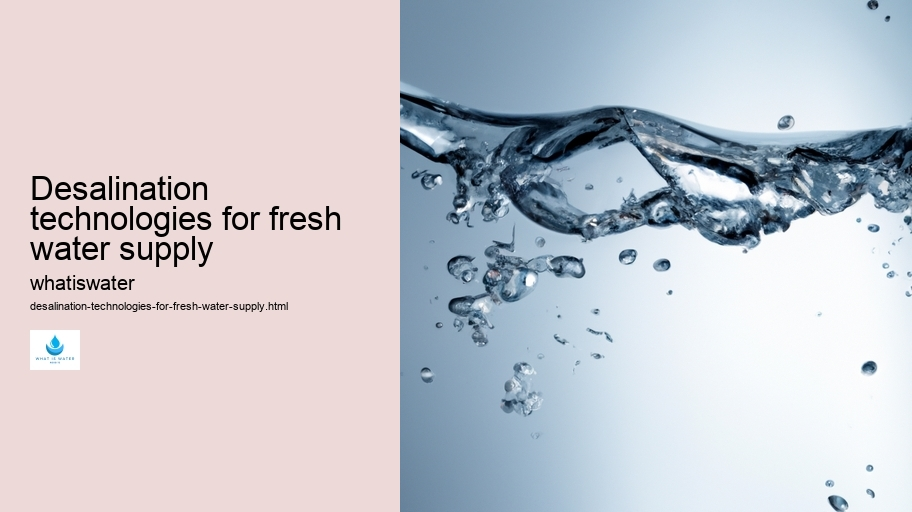
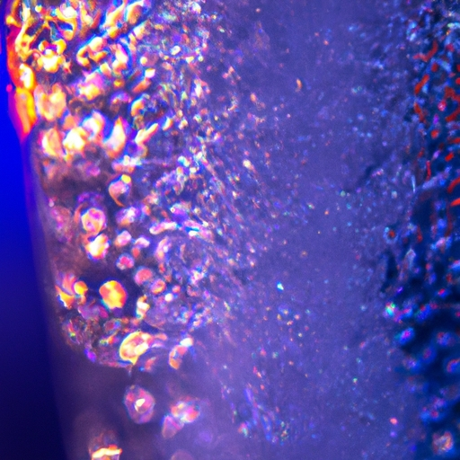

Hydrological Cycle
Hydrological Cycle
Evaporation and transpiration
Condensation and cloud formation
Precipitation and rain patterns
Surface runoff and river systems
Groundwater flow and aquifers
Snowmelt and glacial processes
Water storage in oceans lakes and reservoirs
Soil moisture and infiltration
Water balance and budgeting
Human impact on the hydrological cycle
Marine Ecosystems
Marine Ecosystems
Coral reefs and their biodiversity
Mangrove forests as coastal protectors
Ocean currents and climate regulation
Deepsea habitats and extremophiles
Intertidal zones and estuarine ecosystems
Marine food webs and trophic levels
Freshwater Ecosystems
Freshwater Ecosystems
Conservation efforts for marine species
Marine biogeochemical cycles
Impact of global warming on oceans
Water Resource Management
Water Resource Management
Rivers streams and creeks ecosystems
Lakes ponds wetlands habitats
Biodiversity in freshwater environments
Aquatic plants role in oxygenation
Freshwater fish species diversity
Invasive species impact on freshwater systems
Pollution threats to freshwater sources
Conservation strategies for freshwater biomes
Role of wetlands in flood control
Importance of riparian buffers
Cultural Significance of Water
Cultural Significance of Water
Sustainable water use practices
Desalination technologies for fresh water supply
Wastewater treatment processes
Rainwater harvesting techniques
Management of water during drought conditions
Transboundary water resource politics
Infrastructure for water distribution
Agricultural irrigation efficiency
Urban water demand management
Impact of climate change on water resources
About Us
Contact Us

Desalination technologies for fresh water supply
Water Pollution
Desalination technologies represent a crucial solution for addressing the global challenge of freshwater scarcity. By removing dissolved minerals from seawater or brackish water, these processes yield potable water suitable for human consumption and irrigation purposes.
Desalination technologies for fresh water supply - Hydrologic Cycle
Aquaculture
Water Conservation
Hydrologic Cycle
Floods
Water and Sanitation
Water Sports and Recreation
As the world's population burgeons and freshwater resources become increasingly strained, desalination has emerged as a vital alternative to traditional sources such as rivers, lakes, and aquifers.
Among several desalination techniques, reverse osmosis (RO) is the most prevalent. This method employs a semipermeable membrane that selectively allows water molecules to pass through while excluding larger salt ions and other impurities. RO systems require substantial energy inputs due to high-pressure pumps needed to overcome osmotic pressure; however, ongoing technological advancements are optimizing their efficiency and reducing operational costs.
Thermal desalination methods like multi-stage flash distillation (MSF) and multi-effect distillation (MED) utilize heat to evaporate water, leaving salts behind. These systems often capitalize on waste heat from power plants or use solar energy, which can make them more sustainable options in regions with appropriate climate conditions. Although typically less energy-efficient than RO for large-scale applications, thermal techniques are advantageous when electricity is scarce or expensive.
Electrodialysis reversal (EDR), another technique used primarily for brackish water desalination, involves an electric field driving ions through selective membranes to separate them from the water.
Water Conservation
While less common than RO or thermal methods, EDR can be particularly effective when dealing with waters that have lower salinity levels.
In addition to these well-established methods, novel approaches such as forward osmosis (FO), capacitive deionization (CDI), and membrane distillation are gaining traction.
Desalination technologies for fresh water supply - Water Pollution
Floods
Water and Sanitation
Water Sports and Recreation
These emerging technologies aim to further reduce energy consumption and environmental impact by exploiting natural osmotic pressures or employing innovative materials.
The integration of renewable energies like wind and solar into desalination processes promises significant improvements in sustainability.
Water Pollution
For instance, coupling photovoltaic cells directly with desalination plants could lead to completely self-sufficient systems that do not rely on fossil fuels.
Implementation challenges remain, including high capital costs for plant construction, potential environmental impacts related to brine disposal and chemical usage during pretreatment processes. However, continuous research is addressing these hurdles with new materials that resist fouling, energy recovery devices that recycle pressure within RO systems, and strategies for beneficially using or minimizing brine byproducts.
To ensure equitable access to fresh water produced by desalination technologies—and considering socioeconomic factors—is equally critical. Balancing cost-effectiveness with social responsibilities requires thoughtful policy-making and international cooperation so that communities most in need benefit from these innovations without disproportionate burdens falling upon them.
In conclusion, while not a panacea for all regions facing water stress due partly because of geographical limitations inherent technology itself—desalination stands out powerful tool arsenal combatting worldwide freshwater shortage crisis today’s era marked by climatic unpredictability increasing demands ever-growing human populace alongside agricultural industrial activities reliant steady supplies life-sustaining H2O resource essential existence flourishing planet Earth future generations inherit steward responsibly wisely indeed.

Desalination technologies for fresh water supply - Water Pollution
Water Conservation
Hydrologic Cycle
Floods
Hydrological Cycle
Check our other pages :
Management of water during drought conditions
Water balance and budgeting
Marine food webs and trophic levels
Soil moisture and infiltration
Conservation efforts for marine species
Frequently Asked Questions
What are the main methods of desalination used to produce fresh water?
The main methods of desalination include reverse osmosis (RO) and thermal distillation. Reverse osmosis involves forcing saltwater through a semi-permeable membrane that allows water molecules to pass but blocks salt and other impurities. Thermal distillation, such as multi-stage flash (MSF) and multi-effect distillation (MED), mimics the natural water cycle by heating seawater to create steam, which is then condensed into fresh water leaving the salts behind.
How energy-intensive is desalination, and what are its environmental impacts?
Desalination is typically energy-intensive, with thermal processes requiring significant heat and reverse osmosis needing high-pressure pumps. This energy use often results in greenhouse gas emissions unless renewable sources are employed. Additionally, desalination can have environmental impacts such as the discharge of highly concentrated brine back into the sea, which can harm marine life due to increased salinity and temperature.
Are there any recent advancements or innovations in desalination technology that improve efficiency or reduce environmental impact?
Yes, there have been several advancements aimed at improving the efficiency of desalination processes and reducing their environmental footprint. These include the development of more energy-efficient membranes for reverse osmosis, hybrid systems combining RO with thermal techniques, forward osmosis using natural osmotic pressure differences, and new materials like graphene oxides. Researchers are also exploring renewable energy integration with desalination plants to lower carbon emissions and investigating methods for brine management to minimize ecological disturbances.